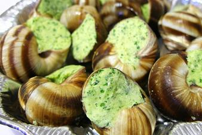

Chef Interview
Chef
Brian Jones, General Manager and Head Chef at Petit Pois Restaurant, is always a joy to watch. Here we are priveleged to see him create a delicious plate of Mushroom Risotto. It comes on a bed of arugula, garnished with butternut squash, and topped with parmesan and truffle oil. |
Interview

|
||
|
Transcript of interview |
||
Recipe
Snails with Garlic and Parsley ButterServes: 4Ingredients 24 Chinese mystery snails, rinsed well |
 |
DirectionsMelt half the butter in medium saucepan. Add the snails and the chopped garlic and stir over medium heat for three minutes. Do not let the garlic brown. Add the roasted garlic puree, water, and remainder of the butter over low heat and gently whisk so that the butter is emulsified. Season with salt and pepper, add the chopped parsley and serve with grilled bread. |
|